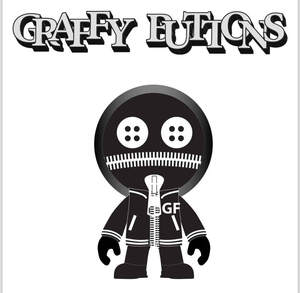

Trade Mark Journal No.2025/034 22 August 2025
UK00004247745 11 August 2025 (25)

- Class 25
- Parts of clothing, footwear and headgear; Clothing; Footwear; Jackets [clothing]; Jerseys [clothing]; Gloves [clothing]; Gloves as clothing; Jackets being sports clothing; Knitwear [clothing]; Visors [clothing]; Headbands [clothing]; Headbands for clothing; Woolen clothing; Shorts [clothing]; Ready-to-wear clothing; Bottoms [clothing]; Wristbands [clothing]; Collars [clothing]; Footwear [excluding orthopedic footwear]; Oilskins [clothing]; Sneakers [footwear]; Leather clothing; Clothing of leather; Leather (Clothing of -); Muffs [clothing]; Tops [clothing]; Garments for protecting clothing; Gloves for apparel; Belts [clothing]; Belts for clothing; Caps [headwear]; Caps being headwear; Mufflers [clothing]; Hoods [clothing]; Clothing for sports; Waterproof clothing; Layettes [clothing]; Sports clothing; Denims [clothing]; Rubbers [footwear]; Jackets (Stuff -) [clothing]; Stuff jackets [clothing]; Gabardines [clothing]; Clothing for leisure wear; Rainproof clothing; Insoles for footwear; Paper hats for use as clothing items; Golf clothing, other than gloves; Corsets [clothing, foundation garments]; Sports caps and hats; Mitts [clothing]; Embroidered clothing; Clothing for cycling; Flip-flops for use as footwear; Kerchiefs [clothing]; Footwear for women; Furs [clothing]; Footwear for men; Party hats [clothing]; Knitted clothing; Playsuits [clothing]; Athletic clothing; Shoes for leisurewear; Maternity clothing; Thermal clothing; Trunks being clothing; Leather belts [clothing]; Weatherproof clothing; Cashmere clothing; Sports clothing [other than golf gloves]; Footwear for sports; Sports footwear; Water-resistant clothing; Men's clothing; Footwear soles; Soles for footwear; Cowls [clothing]; Linen clothing; Casual clothing.
Rocky Forbes